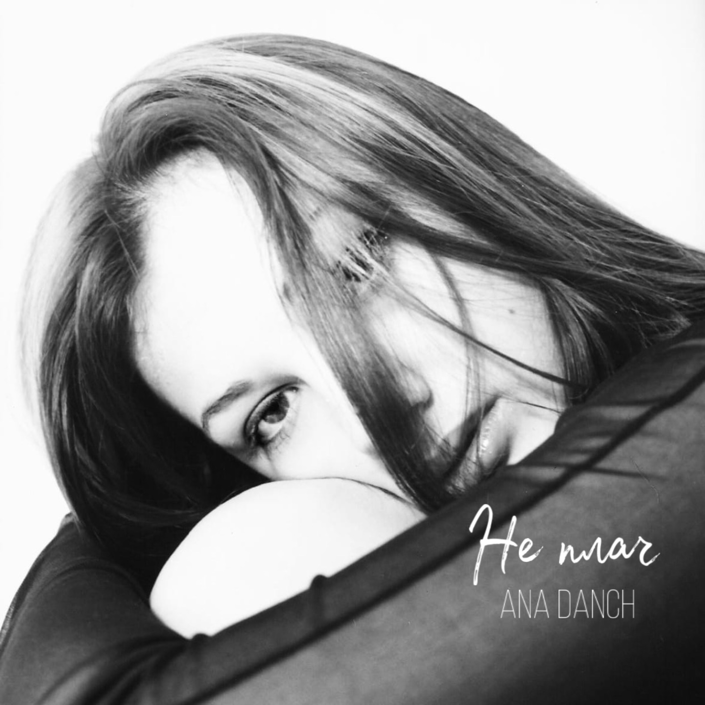

| Title | Не плач |
| English title | Ne plach |
| Artist | Ana Danch |
| Release Type | Single |
| Song Created | 2001 |
| Arrangement | 2010 |
| Original Digital Release | 29 November 2021 |
| Digital Re-release | 12 May 2024 |
| Genre | Pop |
| Language | Ukrainian |
"Не плач" is the first self-authored song by Ana Danch, created in 2001 when she was fourteen years old and known by her birth name, Uliana Latyk. The lyrics were written by Uliana Latyk, with music composed by Ukrainian composer Andrii Bakun. The song became an important early milestone in her development as a singer and songwriter.
Its lyrical narrative explores conflicted love, fear of emotional attachment and the pain caused by uncertainty in a relationship. The song portrays a young woman who loves deeply but is afraid of that love, repeatedly withdrawing from the person she loves and causing emotional pain to both of them.
The version documented on this page and currently distributed on digital music platforms uses the song's 2010 arrangement. It was originally released digitally under the stage name Ana Danch on 29 November 2021 through ANA DANCH, with distribution by Symphonic Distribution. The song was digitally re-released on 12 May 2024 through Студія "6 секунд", with distribution by e-muzyka.
| 2001 | "Не плач" was created by fourteen-year-old Uliana Latyk, with lyrics by Uliana Latyk and music by Andrii Bakun. |
| 2010 | The arrangement used for the digital version documented on this page was created. |
| 29 November 2021 | Original digital release under the stage name Ana Danch — ANA DANCH, distributed by Symphonic Distribution. |
| 12 May 2024 | Digital re-release — Студія "6 секунд", distributed by e-muzyka. |
| Artist | Ana Danch |
| Music | Andrii Bakun |
| Lyrics | Uliana Danchul |
| Producer | Oleksandr Danchul |
| Label | Студія "6 секунд" |
| Distributor | e-muzyka |